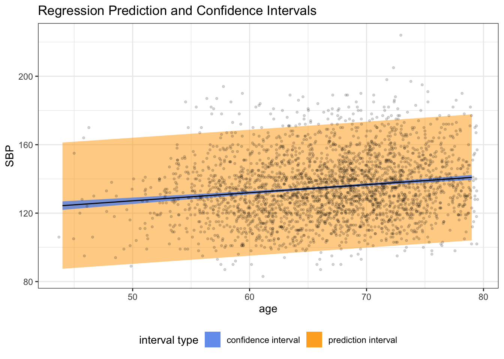

Week 3
Recap:
Recall that we can write in matrix notation:
\[Y = X\beta + \epsilon\]
\[\mathbb E(Y) = X\beta\]
Assuming that \(E(\epsilon) = 0\) and \(\text{Var}(\epsilon) = \sigma^2I\).
Remember how we derived the formula for \(\hat \beta_{OLS}\)? We set \(\frac{\partial}{\partial \beta} SSE(\beta) \stackrel{set}{=} 0\)?
Calculating that out, we find that \[ \frac{\partial}{\partial \beta} SSE(\beta) = -2X'y + 2X'X\beta, \] \[ \Longrightarrow X'X \hat \beta = X' y\] \[ \Longrightarrow \hat \beta_{OLS} = (X'X)^{-1}X'y\]
For standard linear regression (SLR), OLS slope estimates are a scaled correlation coefficient.
Recall that the vector of random values is a variance-covariance matrix.
Last time we showed that \(\hat \beta\) is an unbiased estimator for \(\beta\) when we saw that
\[\mathbb E(\hat \beta) = \mathbb E[\underbrace{(X'X)^{-1} X'}_{A} y] = (X'X)^{-1} X'X \beta = \beta\]
Variance of \(\hat \beta\)
The variance of \(\hat \beta\) is expressed as the variance-covariance matrix
\[\text{Var}(\hat \beta) = (X'X)^{-1} X' \text{Var}(Y) X (X'X)^{-1}\] \[ = \sigma^2 (X'X)^{-1}\]
If we let \(D = (X'X)^{-1}\), the variance of \(\hat \beta_j = \sigma D_{jj}\) and the covariance between \(\hat \beta_i\) and \(\hat \beta_j\) is \(\sigma^2 D_{ij}\).
How would we get to this result?
We are using a shorthand where we denote \((X'X)^TX' = A\), and now we’re just looking at the \(\text{Var}(AY)\). When we are working with the matrix-variance formula, we can rewrite \(\text{Var}(AY) = A\text{Var}(Y)A'\).
Plugging in the formula for \(A\), we get to the above.
Remember we said that \(\text{Var}(\epsilon) = \sigma^2\) and \(Y = X\beta + \epsilon\) where the only randomness comes from \(\epsilon\). In other words
\[\text{Var}(\hat \beta) = (X'X)^{-1} X' \text{Var}(Y) X (X'X)^{-1}\] \[ = (X'X)^{-1} X' \text{Var}(X\beta + \epsilon) X (X'X)^{-1}\] \[ = (X'X)^{-1} X' \text{Var}(\epsilon) X (X'X)^{-1}\] \[ = (X'X)^{-1} X' \sigma^2 I X (X'X)^{-1}\] \[ = \sigma^2 (X'X)^{-1} X' I X (X'X)^{-1}\] \[ = \sigma^2 \cancel{(X'X)^{-1} X' X }\underbrace{(X'X)^{-1}}_{\stackrel{set}{=}D}.\]
Gauss-Markov Theorem
Under the standard linear assumptions, \(\hat \beta_{OLS}\) is the best linear unbiased estimator (BLUE) for \(\beta\).
Linear unbiased estimator: \(\hat \beta_{OLS}\) is a linear combination of the observed \(y\) values (given that \(\hat \beta = (X'X)^{-1}X'y\) is a matrix of constants times a vector \(y\)) and is an unbiased estimator.
It’s “best” in the sense that it is the lowest variance (most precise).
So the Gauss Markov Theorem tells us that among all linear, unbiased estimators of \(\beta\), \(\hat \beta_{OLS}\) has the lowest variance.
Simple Linear Regression as a Special Case
The least squares estimators \(\hat \beta_0\) and \(\hat \beta_1\) can be expressed as
\[\hat \beta_0 = \sum_{i=1}^n l_i y_i, \quad \hat \beta_1 = \sum_{i=1}^n k_i y_i,\]
where \(l_i = \frac{1}{n} - \frac{\bar x(x_i - \bar x)}{\sum_{i=1}^n (x_i - \hat x)^2},\) and \(k_i = \frac{(x_i - \bar x)}{\sum_{i=1}^n (x_i - \bar x)^2}\).
Variance of LS Estimators
\[\text{Var}(\hat \beta_0) = \sigma \left\{ \frac{1}{n} + \frac{\bar x^2}{\sum_{i=1}^n (x_i-\bar x)^2}\right\},\] \[\text{Var}(\hat \beta_1) = \sigma \left\{\frac{1}{\sum_{i=1}^n (x_i-\bar x)^2}\right\},\] \[\text{Cov}(\hat \beta_0, \hat \beta_1) = \sigma \left\{ - \frac{\bar x}{\sum_{i=1}^n (x_i-\bar x)^2}\right\}.\]
The variance-covariance matrix is
\[\text{Var}(\hat \beta) = \sigma(X'X)^{-1} = \left[ \begin{array}{cc} \text{Var}(\hat \beta_0) & \text{Cov}(\hat \beta_0, \hat \beta_1) \\ \text{Cov}(\hat \beta_0, \hat \beta_1) & \text{Var}(\hat \beta_1) \end{array} \right].\]
Estimation of \(\sigma^2\)
In order to estimate \(\text{Var}(\hat \beta)\), we need an estimator of \(\sigma^2\):
We base this on the sum of squared errors (SSE):
\[SSE = (y - X\hat\beta)'(y-X\hat \beta)\] \[ = \sum_{i=1}^n(y_i-x'_i\hat\beta)^2\] \[ = \sum_{i=1}^n (\hat \epsilon_i)^2\]
\[\hat \sigma^2 = MSE = \frac{SSE}{n - p - 1}.\]
This estimator \(\hat \sigma^2\) is an unbiased estimator.
The \(n-p-1\) in the denominator is because we estimate \(p+1\) parameters and we divide by the degrees of freedom, which is \(n - \text{\# things we had to estimate}\). The Kutner book has a more rigorous presentation of why this is the right amount to divide by.
Normality assumption
If we are willing to make the stronger assumption that \(\epsilon_i \stackrel{iid}{\sim} \mathcal N(0, \sigma^2)\), then we can perform inference on \(\beta\).
First note that \(\epsilon_i \stackrel{iid}{\sim} \mathcal N(0, \sigma^2) \Longrightarrow Y_i \stackrel{ind}{\sim} \mathcal N(x_i'\beta, \sigma^2)\), such that
\[f_Y(y_i|\beta, \sigma^2) = \frac{1}{\sqrt{2\pi\sigma^2}} \exp\left[ -\frac{1}{2\sigma^2} (y_i - x_i'\beta)^2\right]\]
Notice that the \(Y_i\) values are independent but not identically distributed.
Before we were just assuming that the \(\epsilon\) values were uncorrelated, which in the special case of the normal distribution implies independence, but this isn’t necessarily so for other distributions.
We can then use maximum likelihood techniques to obtain \[\hat \beta_{MLE} \sim MVN_{p+1} \left[ \beta, \sigma^2 (X'X)^{-1} \right].\]
Joint Density
Recap of maximum likelihood estimation.
In general, suppose we have data \(Y_1, ..., Y_n\), which are independent random variables with \(Y_i\) having probability density function \[f_Y(y_i|\theta)\] where \(\theta\) is a vector of unknown parameters.
Then the joint density function of all the \(y_i\) given \(\theta\) is the product of the individual densities
\[f(y_1, ..., y_n|\theta) = \prod_{i=1}^n f_Y(y_i|\theta).\]
Likelihood Functions
The likelihood function of \(\theta\) given the data has the same form as the joint pdf:
\[\mathcal L(\theta|y_1,...,y_n) = f(y_1, ..., y_n|\theta) = \prod_{i=1}^n f_Y(y_i|\theta).\]
Of course this looks exactly the same as the joint density of the \(Y_i\) values, but instead this is a function of \(\theta\) instead of a function of the \(y_i\) values.
Once you take a random sample of size \(n\), the \(y_i\) values are known, and the likelihood is considered as a function of unknown parameter \(\theta\).
The likelihood function should still integrate to 1.
The MLE of \(\theta\) is the value \(\hat \theta\) that maximizes the likelihood
\[\mathcal L(\theta | y_1, ..., y_n)\]
as a function of \(\theta\).
The value \(\hat \theta\) that maximizes \(\mathcal L(\theta)\) also maximizes
\[\ell(\theta | y_1, ..., y_n) = \log \mathcal L(\theta | y_1, ..., y_n).\]
Solving for MLE
\[ \frac{\partial \ell}{\partial \theta} \stackrel{set}{=} 0,\]
and technically we’re going to need to check that this is a maximum as opposed to a minimum, and we’ll do so by checking that
\[\left[ \frac{\partial^2 \ell}{\partial \theta^2} \right]_{\theta = \hat \theta} < 0.\]
If we were in a matrix setting instead of a vector setting, we’d need to check that the matrix is negative definite for a maximum, or positive definite for a minimum.
The negative of the second derivative,
\[\frac{-\partial^2 \ell(\theta | y_1, ..., y_n)}{\partial \theta^2},\]
is called the information.
Returning to MLE for Regression
Thus in the linear regression setting if we assume \(\epsilon_i \stackrel{iid}{\sim} \mathcal N(0, \sigma^2),\) then \(Y_i \stackrel{ind}{\sim} \mathcal N(x'_i\beta, \sigma^2)\) and \[f_Y(y_i|\beta, \sigma^2) = \frac{1}{\sqrt{2\pi\sigma^2}} \exp \left[ -\frac{1}{2\sigma^2} (y_i - x_i'\beta)^2\right]\]
\[\mathcal L(\beta, \sigma^2 | y_1, ..., y_n) = \prod_{i=1}^n f_Y(y_i|\beta, \sigma^2),\]
and
\[\mathcal L(\beta, \sigma^2|y_1, ..., y_n) = \left( \frac{1}{\sqrt{2\pi\sigma^2}}\right)^n \exp \left[ - \frac{1}{2\sigma^2} \sum_{i=1}^n (y_i - x_i'\beta)^2 \right]\] \[= \left( \frac{1}{\sqrt{2\pi\sigma^2}}\right)^n \exp \left[ - \frac{1}{2\sigma^2} (y - X\beta)'(y-X\beta) \right].\]
Turning to the log-likelihood function:
\[\ell(\beta, \sigma^2 | y_1, ..., y_n) \propto \cancel{-n/2\log(\sigma^2)} \underbrace{- \frac{1}{2\sigma^2} (y-X\beta)'(y-X\beta)}_{= \frac{-1}{2\sigma^2} S(\beta)}.\]
The values that maximize this log-likelihood with respect to \(\beta\), call them \(\hat \beta_{MLE}\) are the same as those that minimize \(S(\hat \beta)\), i.e.,
\[\hat \beta_{MLE} = (X'X)^{-1}X'y\]
and it’s straightforward to show that
\[\hat \beta_{MLE} \sim MVN_{p+1}\left[ \beta, \sigma^2(X'X)^{-1} \right].\]
\(\sigma^2_{MLE}\)
While the estimates for \(\hat \beta\) are the same for OLS vs. MLE, we have that \[\hat \sigma^2_{MLE} = \frac{1}{n}(y-X\hat\beta)'(y-X\hat\beta) = \frac{(n-p-1)}{n}MSE\]
So of note, the MLE for \(\beta\) are the same as the least squares estimator. However the MLE for \(\sigma^2\) is not.
Recall that the least squares estimator of \(\sigma^2\) is unbiased. The MLE of \(\sigma^2\) is biased, although it is consistent: \[\lim_{n\to\infty} P(|\hat\sigma^2 - \sigma^2| \leq \epsilon) \to 1, \, \forall \epsilon > 0.\]
Inference in Linear Regression
Often it’s of interest to determine if, collectively, a group of predictors significantly contribute to the variability in \(y\) given another group of predictors are in the model.
Common examples are:
- Is a categorical variable, represented by dummy variables, significant (analagous to the overall ANOVA F-test)?
- Can the effect of a predictor be represented as a linear effect or is a higher-level polynomial (i.e., using \(x^2\), \(x^3\), etc.) necessary?
- Is a model that contains only main effects adequate or do we need to incorporate a set of interactions between variables in the models?
Sum of squares decomposition
\[(y_i - \bar y)^2 = ((y_i - \hat y_i) + (\hat y_i - \bar y))^2\]
Then, when computing the sums of squares, we get
\[\sum(y_i - \bar y)^2 = \sum_{i=1}^n (\hat y_i - \bar y)^2 + \sum_{i=1}^n (y_i - \hat y_i)^2,\]
which happily features a “freshman’s dream”.
We thus have that \[SST = \underbrace{SSR}_{\text{explained by regression}} + \underbrace{SSE}_{\text{left over}},\]
where \(SST = \text{Sums of Squares Total}\), \(SSR = \text{Sums of Squares Regression}\), and \(SSE = \text{Sums of Squares Error}\).
The ANOVA-like table
We often will write something like this type of table:
| Source | \(SS\) | \(\text{df}\) | \(\text{MS}\) | \(\mathbb E[\text{MS}]\) |
|---|---|---|---|---|
| Regression | \(SSR = \hat \beta'X'y-n\bar y^2\) | \(p\) | \(\frac{SSR}{p}\) | \(\sigma^2 + \frac{\beta'_Rx'_Cx_C\beta_R}{p}\) |
| Error | \(SSE = y'y - \hat \beta' X'y\) | \(n-(p+1)\) | \(\frac{SSE}{n-(p+1)}\) | \(\sigma^2\) |
| Total | \(SST=y'y - n \bar y^2\) | \(n-1\) |
where \(MS = \text{Mean Square Error}\), and \[X_c = \left( \begin{array}{cccc} x_{11}-\bar{x_1} & x_{12}- \bar{x_2} & \cdots & x_{1p}-\bar{x_p} \\ x_{21}-\bar{x_1} & x_{22}- \bar{x_2} & \cdots & x_{2p}-\bar{x_p} \\ \vdots & \vdots & \ddots & \vdots \\ x_{n1}-\bar{x_1} & x_{n2}- \bar{x_2} & \cdots & x_{np}-\bar{x_p} \end{array}\right)\]
Testing for Groups of Predictors
How do we use this decomposition to test for a group of coefficients?
The hypothesis can be formulated as
\[H_0: \beta_1 = \beta_2 = ... = \beta_q = 0, q \leq p\] \[H_1: \text{ at least one of } \beta_1, ..., \beta_q \neq 0.\]
As an aside, tests of the overall regression and tests for a single variable fall within this framework as well:
The overall test:
\[H_0: \beta_1 = \beta_2 = ... = \beta_p = 0\] \[H_1: \beta_j \neq 0 \text{ for at least one } j, j = 1,...,p\]
For a single predictor:
\[H_0: \beta_j = 0\] \[H_1: \beta_j \neq 0\]
We like the property that testing for significance among a “group of coefficients” reduces in two special cases to either the overall test or a test for an individual coefficient.
If we consider the model in matrix form:
\[Y = X\beta + \epsilon,\]
to construct a test based on sums of squares, partition \(\beta\) accordingly:
\[\beta = (\beta_1^, \beta_2')',\]
where \(\beta_1\) is a \(q \times 1\) and \(\beta_2\) is \((p+1-q) \times 1\). We want to test the null hypothesis \[H_0: \beta_1 = 0\] \[H_1: \beta_1 \neq 1\] and \(\beta_2\) is left unspecified.
Defining \(X = \left[ X_1, X_2 \right]\), rewrite the model as
\[Y = X_1 \beta_1 + X_2 + \beta_2 + \epsilon.\]
Now our model is partitioned so we’re ready to test for significance among the predictors and \(\beta\) coefficients of interest.
The full model has SSR expressed as
\[SSR(X) = \hat \beta' X' y - n \bar y^2\]
and Mean Square Error
\[MSE(X) = \frac{y'y - \hat \beta' X' y}{n-p-1}.\]
To find the contribution of \(X_1\), fit the model assuming \(H_0\) is true. The reduced model is \[Y = X_2 \beta_2 + \epsilon,\] which yields \[\hat \beta_2 = (X_2'X_2)^{-1}X_2'y \quad \text{ and } \quad SSR(X_2) = \hat \beta_2' X_2' y - n' \bar y^2.\]
The regression sums of squares due to \(X_1\) given \(X_2\) is in the model is
\[SSR(X_1|X_2) = SSR(X) - SSR(X_2)\]
with \(q\) degrees of freedom. This is known as the extra sum of squares due to \(X_1\) given \(X_2\).
Under the null hypothesis,
\(SSR(X_1|X_2)/\sigma^2 \sim \chi_q^2\) and \(SSE/\sigma^2 \sim \chi_{(n-p-1)}^2\), and these quantities are independent.
In general, if one \(\chi^2\) distribution has degrees of freedom \(d_1\) and another has \(d_2\), then \((\chi_{d_1}^2/d_2)/(\chi_{d_2}^2/d_2) \sim F_{d_1,d_2}\) if the two are independent.
So we can test \(H_0: \beta_1 = 0\) with the statistic \[F = \frac{SSR(X_1|X_2)/q}{MSE(X)} \stackrel{H_0}{\sim} F_{q,n-p-1}\]
This \(F\) distributional result requires either
- normality of errors \(\epsilon_i \sim \mathcal N(0,\sigma^2)\)
- large sample theory
There’s a handful of things above that we just have to take for granted assumed from a probability & inference class and don’t have time to re-prove here.
The \(F\) written above is an \(F\)-statistic (or \(F\)-distributed) because it is the quotient of two \(\chi^2\)-distributed variables divided by their degrees of freedom.
With reasonably large sample size, \(\mathbb E[F_{q,n-p-1}] \approx 1\).
For example, one can see that if one runs the regressions:
lm(data = mtcars, hp ~ rnorm(n = nrow(mtcars)))
summary(.Last.value)
#> ...
#> F-statistic: 0.06081 on 1 and 30 DF
lm(data = mtcars, hp ~ mpg)
#> ...
#> F-statistic: 45.46 on 1 and 30 DFWe can think of this procedure as asking: Is the increase in the regression sums of squares associated with adding \(q\) additional predictors, given the presence of the remaining variables in the model, sufficient to warrant removing \(q\) additional degrees of freedom from the denominator of MSE?
Adding an unimportant predictor may increase the MSE, which will increase the uncertainty in the regression coefficient estimates and the variance of \(\hat y\) - so we should include only predictors that explain the response.
Note however that for the purpose of explanation confounders may not reach significance at given level (e.g. \(\alpha = 0.05\)) but still have a clinically relevant effect on both outcome and exposure and therefore affect the regression coefficients of interest.
Example: Test for 2 BMI Terms, HERS Data
library(gt)
library(tidyverse)── Attaching core tidyverse packages ──────────────────────── tidyverse 2.0.0 ──
✔ dplyr 1.1.2 ✔ readr 2.1.4
✔ forcats 1.0.0 ✔ stringr 1.5.0
✔ ggplot2 3.4.2 ✔ tibble 3.2.1
✔ lubridate 1.9.2 ✔ tidyr 1.3.0
✔ purrr 1.0.1
── Conflicts ────────────────────────────────────────── tidyverse_conflicts() ──
✖ dplyr::filter() masks stats::filter()
✖ dplyr::lag() masks stats::lag()
ℹ Use the conflicted package (<http://conflicted.r-lib.org/>) to force all conflicts to become errorshers <- readr::read_csv(here::here("data/hers.csv"))Rows: 2763 Columns: 40
── Column specification ────────────────────────────────────────────────────────
Delimiter: ","
chr (16): HT, raceth, nonwhite, smoking, drinkany, exercise, physact, globra...
dbl (24): age, medcond, weight, BMI, waist, WHR, glucose, weight1, BMI1, wai...
ℹ Use `spec()` to retrieve the full column specification for this data.
ℹ Specify the column types or set `show_col_types = FALSE` to quiet this message.hers$BMIc <- hers$BMI - mean(hers$BMI, na.rm=TRUE)
lm.ldl.interact <-
lm(data = hers %>% filter(! is.na(BMIc)), LDL ~ BMIc*statins + age + nonwhite + drinkany + smoking)
lm.ldl.noBMI <-
lm(data = hers %>% filter(! is.na(BMIc)), LDL ~ statins + age + nonwhite + drinkany + smoking)
# perform f-test using anova(reducedModel, fullModel)
bmi.test <- broom::tidy(anova(lm.ldl.noBMI, lm.ldl.interact))
## format and print results table
gt(bmi.test) %>%
tab_header(title = md("**Test of significance of BMI**"),
subtitle = md("From LDL model with BMI * statin interaction")) %>%
cols_width(term ~ px(375)) %>% sub_missing(missing_text = '') %>%
fmt_number(columns=c('statistic','p.value'),decimals=3) %>%
tab_options(table.align='left')| Test of significance of BMI | ||||||
| From LDL model with BMI * statin interaction | ||||||
| term | df.residual | rss | df | sumsq | statistic | p.value |
|---|---|---|---|---|---|---|
| LDL ~ statins + age + nonwhite + drinkany + smoking | 2739 | 3725955 | ||||
| LDL ~ BMIc * statins + age + nonwhite + drinkany + smoking | 2737 | 3707501 | 2 | 18454.31 | 6.812 | 0.001 |
Overall Test
Under the null hypothesis, \(SSR/\sigma^2 \sim \chi^2_p\) and \(SSE/\sigma^2 \sim \chi^2_{n-(p+1)}\) are independent.
Therefore we have \[F = \frac{SSR/p}{SSE/[n-(p+1)]} = \frac{MSR}{MSE} \stackrel{H_0}{\sim} F_{p,n-p-1}\]
We note that this is reported automatically in a lm().
overall.test <- broom::tidy(anova(lm(data = hers, LDL ~ BMI + age)))
gt(overall.test) %>%
tab_header(title = md("**Overall test**"),
subtitle = md("Model of LDL with BMI and age")) %>%
sub_missing(missing_text = '') %>%
fmt_number(columns = c('statistic', 'p.value'), decimals = 3) %>%
tab_options(table.align='left')| Overall test | |||||
| Model of LDL with BMI and age | |||||
| term | df | sumsq | meansq | statistic | p.value |
|---|---|---|---|---|---|
| BMI | 1 | 14446.022 | 14446.022 | 10.155 | 0.001 |
| age | 1 | 7567.195 | 7567.195 | 5.320 | 0.021 |
| Residuals | 2744 | 3903361.455 | 1422.508 | ||
We can interpret the entries above in the sumsq column as \(SSR(BMI)\) and then \(SSR(age|BMI)\). These are called the “extra sums of squares” contributed by each variable, and sometimes called the “type 1 sums of squares” (no relation to Type 1 error, but more of a historical idiosyncrasy as a result of how old software [either SAS or S or S-plus] printed these out).
\[F = \frac{(14446 + 7567)/2}{3903361/2744} = 7.74\]
Under \(H_0\), \(F \sim F_{2, 2744}\), yielding \(p = 0.0004458\).
We reject the null hypothesis at \(\alpha = 0.05\) and conclude that at least one of \(\beta_1\) or \(\beta_2\) is not equal to zero.
One should note that the above table is one of the places in which order matters because each \(SSR\) is conditional on the inclusion of the previously listed variables.
Wald Tests
For testing individual coefficients \((H_0: \beta_j = 0\) vs \(H_1: \beta_j \neq 0\)) we can also use the conventional Wald test. To construct the test statistic, consider that
\[\hat \beta_j \sim \mathcal N(\beta_j, \sigma^2) D_{jj} \quad \text{ and } \quad \frac{\hat{\text{Var}} (\hat \beta_j)}{\sigma^2 D_{jj}} \sim \frac{\chi^2_{n-p-1}}{(n-p-1)}.\]
Note that if \(Z \sim \mathcal N(0,1)\) and \(S \sim \chi^2_d\) and \(Z \perp\!\!\!\perp S\) then \(\frac{Z}{\sqrt{S/d}} \sim t_d\).
\[\left( \frac{\hat \beta_j - \beta_j}{\sqrt{\sigma^2 D_{jj}}} \right) \biggr / \left( \sqrt{\frac{\widehat{\text{Var}}(\hat \beta_j)}{\sigma^2D_{jj}}} \right) = \underbrace{\boxed{\frac{\hat \beta_j - \beta_j}{\sqrt{\widehat{\text{Var}}(\hat \beta_j)}}}}_{\text{this should look like a t-statistic}} \stackrel{H_0}{\sim} t_{n-p-1}\]
It should be noted that a \(t^2\) value where \(t\) is a \(t\)-statistic follows an \(F\)-distribution. This implies that in the case of testing a single coefficient, the \(t\)-test and the \(F\)-test give the exact same results.
In the summary() function, the \(p\)-values shown will be from \(t\)-tests for each \(\beta_j\), while the \(F\)-statistic shown is for the overall model.
\[E(LDL_i) = \beta_0 + \beta_1 BMI_i + \beta_2 Age_i\]
wald.test <- broom::tidy(lm(data = hers, LDL ~ BMI + age))
gt(wald.test) |>
tab_header(title =
md("**Individual coefficient Wald test**"),
subtitle = "Test of BMI in model of LDL with age already included") |>
fmt_number(decimals = 3) |>
tab_options(table.align='left')| Individual coefficient Wald test | ||||
| Test of BMI in model of LDL with age already included | ||||
| term | estimate | std.error | statistic | p.value |
|---|---|---|---|---|
| (Intercept) | 151.443 | 8.774 | 17.260 | 0.000 |
| BMI | 0.367 | 0.132 | 2.778 | 0.006 |
| age | −0.253 | 0.110 | −2.306 | 0.021 |
\(T = 0.366/0.132 = 2.78 \quad p = 0.0006\)
This Wald testing strategy extends to testing groups of cofficients
\[Y = X_1 \beta_1 + X_2 \beta_2 + \epsilon\]
where \(\beta_1\) is \(q \times 1\) and \(\beta_2\) is \((p + 1 - q) \times 1\).
\[H_0: \beta_1 = 0\] \[H_1: \beta_1 \neq 0\]
The multivariate Wald test statistic is \[W = \hat \beta_1' \left[ \widehat{\text{Var}}(\hat \beta_1 ) \right]^{-1} \hat \beta_1\]
Under the null,
- \((1/q)W \sim F_{q,n-p-1}\)
- Asymptotically, \(W \sim \chi_q^2\)
wald.test.group <- broom::tidy(lm.ldl.interact)
gt(wald.test.group) |>
tab_header(title =
md("**LDL model with BMI * statin interaction**")) |>
fmt_number(decimals = 3) |>
tab_options(table.align='left')| LDL model with BMI * statin interaction | ||||
| term | estimate | std.error | statistic | p.value |
|---|---|---|---|---|
| (Intercept) | 162.405 | 7.583 | 21.416 | 0.000 |
| BMIc | 0.582 | 0.160 | 3.636 | 0.000 |
| statinsyes | −16.253 | 1.469 | −11.066 | 0.000 |
| age | −0.173 | 0.111 | −1.563 | 0.118 |
| nonwhiteyes | 4.073 | 2.275 | 1.790 | 0.074 |
| drinkanyyes | −2.075 | 1.467 | −1.415 | 0.157 |
| smokingyes | 3.110 | 2.167 | 1.435 | 0.151 |
| BMIc:statinsyes | −0.702 | 0.269 | −2.606 | 0.009 |
In this scenario, \(H_0: \beta_2 - \beta_8 = 0\).
## Generic function for a Wald test from the output of lm()
waldTest <- function(fit, vec, digits=c(2,4)) {
beta <- coef(fit)[vec]
varMat <- summary(fit)$cov.unscaled[vec,vec] * (summary(fit)$sigma^2)
testStat <- t(beta) %*% solve(varMat) %*% beta
pVal <- 1 - pchisq(testStat, length(vec))
value <- c(Fstat = round(testStat, digits=digits[1]),
p = round(pVal, digits=digits[2]))
return(value)
}
waldTest(lm.ldl.interact, vec = c(2,8)) Fstat p
13.6200 0.0011 Testing general linear hypotheses
Suppose we are interested in testing linear combinations of the regression coefficients. For example, we may be interested in testing
\[H_0: \beta_i = \beta_j\]
equivalently \(H_0: \beta_i - \beta_j = 0\).
Such hypotheses can be expressed as \(H_0: C \beta = 0\).
Where \(C\) is an \(r \times (p+1)\) matrix of linearly independent contrasts with \(r\) the number of restrictions imposed by the null.
For example, consider the model \[Y_i = \beta_0 + \beta_1 x_{i1} + \beta_2 x_{i2} + \beta_3 x_{i3} + \epsilon_i,\]
and testing the hypothesis \[H_i : \beta_1 = 0, \beta_2 = \beta_3\]
This could also be written as \[\left( \begin{array}{c} \beta_1 \\ \beta_2 - \beta_3 \end{array} \right) = \left( \begin{array}{c} 0 \\ 0 \end{array} \right)\]
This null hypothesis is equivalent to \[H_0: \left( \begin{array}{cccc} 0 & 1 & 0 & 0 \\ 0 & 0 & 1 & -1 \end{array} \right)\beta = 0\] were \(\beta = (\beta_0, \beta_1, \beta_2, \beta_3)'\).
We can obtain the reduced model by solving \(C\beta\) for \(r\) of the regression coefficients in terms of the remaining \(p+1-r\) regression coefficients. Substituting these values into the full model will yield a reduced model under the null hypothesis,
\[Y = Z \gamma + \epsilon,\]
where \(\dim(Z) = n \times (p+1 -r)\) matrix and \(\dim(\gamma) = (p + 1 - r) \times 1\) vector of regression coefficients.
The residual SS for this reduced model is \[SSE(RM) = y'y - \hat\gamma' Z'y \quad \quad (n - p - 1 + r \, \text{ degrees of freedom})\]
\(SSR(\text{Full Model}) - SSR(\text{Reduced Model})\) is called the sum of squares due to the hypothesis \(C\beta=0\).
We can test this hypothesis using \[F = \frac{(SSR(FM)-SSR(RM))/r}{MSE} \stackrel{H_0}{\sim} F_{r,n-p-1}.\]
Example with HERS data
Consider using the physical activity score (1-5):
| Physact | Activity |
|---|---|
| 1 | Much less active |
| 2 | Somewhat less active |
| 3 | About as active |
| 4 | Somewhat more active |
| 5 | Much more active |
An ANOVA model for glucose level regressed on physical activity is
\[E(glucose_i) = \beta_0 + \beta_1D_{i1} + \beta_2D_{i2} + \beta_3D_{i3} + \beta_4 D_{i4}\]
Question: For the purposes of predicting glucose level, is the cruder physical activity categorization below adequate?
| Collapsed Physact | Activity |
|---|---|
| 1 | Less active |
| 2 | About as active |
| 3 | More active |
Recall the full model is
\[E(glucose_i) = \beta_0 + \beta_1D_{i1} + \beta_2D_{i2} + \beta_3D_{i3} + \beta_4 D_{i4}\]
and this question corresponds to the null hypothesis .
Remember that we can also write \(H_0\) as \(\beta_1 - \beta_2 = 0, \beta_4 = 0\). We can think about this as having solved for \(\beta_1\) in terms of \(\beta_2\) or vice-versa.
\[H_0: \beta_1 = \beta_2, \beta_4 = 0\]
and the reduced model \[E(glucose_i) = \beta_0 + \beta_1(D_{i1} + D_{i2}) + \beta_3D_{i3}\]
lm.glucose.pa <- lm(glucose ~ factor(physact), data = hers)
pa.test.fine <- broom::tidy(anova(lm.glucose.pa))
gt(pa.test.fine) |>
tab_header(title =
md("**Overall test of 5-level physical activity**"),
subtitle = "Model of glucose with 5 PA categories") |>
fmt_number(decimals = 1) |>
tab_options(table.align='left')| Overall test of 5-level physical activity | |||||
| Model of glucose with 5 PA categories | |||||
| term | df | sumsq | meansq | statistic | p.value |
|---|---|---|---|---|---|
| factor(physact) | 4.0 | 87,696.5 | 21,924.1 | 16.5 | 0.0 |
| Residuals | 2,758.0 | 3,662,765.0 | 1,328.1 | NA | NA |
hers$collapsed_physact <-
case_when(hers$physact %in% c("much less active", 'somewhat less active') ~ 'less',
hers$physact %in% c("much more active", 'somewhat more active') ~ 'more',
TRUE ~ hers$physact)
lm.glucose.pacoarse <- lm(glucose ~ factor(collapsed_physact), data = hers)
pa.test.coarse <- broom::tidy(anova(lm.glucose.pacoarse))
gt(pa.test.coarse) |>
tab_header(
title = md("**Overall test of 3-level physical activity**"),
subtitle = "Model of glucose with 3 PA categories") |>
fmt_number(columns = df:meansq,
decimals=0) |>
fmt_number(columns = statistic:p.value,
decimals=2) |>
tab_options(table.align = 'left')| Overall test of 3-level physical activity | |||||
| Model of glucose with 3 PA categories | |||||
| term | df | sumsq | meansq | statistic | p.value |
|---|---|---|---|---|---|
| factor(collapsed_physact) | 2 | 76,501 | 38,250 | 28.73 | 0.00 |
| Residuals | 2,760 | 3,673,961 | 1,331 | NA | NA |
Our \(F\)-test then becomes:
\[ \frac{(87,697 - 76,501)/2}{1330} = 4.21 \stackrel{H_0}{=} F_{2,2760} \, \, (p = 0.0149)\]
How would we get that p-value?
In our case we can run:
F_stat <- ((pa.test.fine$sumsq[[1]]-pa.test.coarse$sumsq[[1]])/2) /
pa.test.fine$meansq[[2]]
print(F_stat)[1] 4.215159pf( # the distribution function (cdf) of the F distribution
q = F_stat,
df1 = 2,
df2 = pa.test.fine$df[[2]],
lower.tail = FALSE)[1] 0.01486524# compare to the anova table p-value
anova(lm.glucose.pacoarse, lm.glucose.pa) |>
broom::tidy() |>
gt() |>
tab_header(
title = md("**ANOVA table comparing the 5-level to 3-level model**"),
subtitle = "Glucose regressed on physical activity") |>
fmt_number(
columns = df.residual:df,
decimals = 0) |>
fmt_number(
columns = statistic:`p.value`,
decimals = 3
)| ANOVA table comparing the 5-level to 3-level model | ||||||
| Glucose regressed on physical activity | ||||||
| term | df.residual | rss | df | sumsq | statistic | p.value |
|---|---|---|---|---|---|---|
| glucose ~ factor(collapsed_physact) | 2,760 | 3,673,961 | NA | NA | NA | NA |
| glucose ~ factor(physact) | 2,758 | 3,662,765 | 2 | 11195.89 | 4.215 | 0.015 |
What is the multivariate Wald test for a general linear hypothesis?
\[H_0 : C\beta = 0\]
And thus \[W = (C\hat \beta)'(\widehat{\text{Var}}(C\hat\beta))^{-1}(C\beta)\] \[ = (C\hat\beta)'[C \widehat{\text{Var}}(\hat\beta) C']^{-1}(C\hat\beta)\] \[ = (C\hat\beta)'[C \hat \sigma^2 (X'X)^{-1} C']^{-1} (C\hat\beta)\]
and \(W/r \sim F_{r,n-p-1}\) or asymptotically \(W \sim \chi^2_r\).
Confidence Intervals
Recall that often we obtain CIs by inverting test statistics.
Thus we can construct a confidence interval for \(\beta_j\) by inverting the univariate \(t\)-test.
First, letting \(c\) denote \(t_{n-p-1,1-\alpha/2}\), note that \[P(-c < \frac{\hat \beta_j - \beta_j}{\sigma(\hat \beta_j)} < c) = 0.95\]
\[ \Longrightarrow (\hat \beta_j - c \times \sigma(\hat \beta_j) < \beta_j < \hat \beta_j + c \times \sigma(\hat \beta_j)) = 0.95\]
\[\hat \beta_j \pm t_{n - p -1, 1 - \alpha/2} \sqrt{\hat \sigma^2 D_{jj}}\]
Model Estimated Expected Value
A 100(1-\(\alpha)\)% CI for \(\mu(x) = x'\beta\) is \[\hat \mu(x) \pm t_{n-p-1, 1-\alpha/2} \sqrt{\hat \sigma^2 x' (X' X)^{-1} x}\]
Prediction Intervals
A 100(1-\(\alpha\))% prediction interval for a single new observation with covariate values \(x_{new}\) is constructed by noting that
\[y_{new} = x_{new}' \beta + \varepsilon_{new}\]
and \(\text{Var}(\hat y_{new}) = \sigma^2 x_{new}' (X'X)^{-1}x_{new} + \sigma^2\). Then
\[\hat y_{new} \pm t_{n-p-1, 1 -\alpha} \sqrt{ \hat \sigma^2 \left(1 + x_{new}' (X'X)^{-1} x_{new}\right)}\]
where \(\hat y_{new} = x_{new}' \hat \beta\).
Thus the predictions for \(y_{new}\) have have uncertainty both from the estimate of \(\hat \beta\) and the estimated error variance \(\hat \sigma^2\).
lm.sbp.age <- lm(SBP ~ age, data = hers)
pred_with_ci <- predict(lm.sbp.age, interval = 'confidence')
pred_with_pi <- predict(lm.sbp.age, interval = 'prediction')Warning in predict.lm(lm.sbp.age, interval = "prediction"): predictions on current data refer to _future_ responsesintervals <- data.frame(hers$age, pred_with_ci, pred_with_pi[,2:3])
names(intervals) <- c('age', 'yhat', 'lwr_ci', 'upr_ci',
'lwr_pi', 'upr_pi')
intervals <- intervals %>% arrange(age)
ggplot(intervals, aes(age)) +
geom_ribbon(aes(ymin= lwr_pi, ymax = upr_pi, fill = 'prediction interval'), alpha = 0.5) +
geom_ribbon(aes(ymin= lwr_ci, ymax = upr_ci, fill = 'confidence interval'), alpha = 0.8) +
geom_line(aes(y = yhat)) +
geom_jitter(data = hers, aes(age, SBP), size = .75, width = .5, height = 0, alpha = 0.15) +
scale_fill_manual(values = c('prediction interval' = 'orange', 'confidence interval' = 'cornflowerblue')) +
theme_bw() +
labs(y = 'SBP', fill = 'interval type') +
ggtitle("Regression Prediction and Confidence Intervals") +
theme(legend.position = 'bottom')
Note that we have assumed \(\varepsilon \sim \mathcal N(0, \sigma^2)\) to construct the prediction interval. If the error terms are not close to normal, then the prediction interval could be misleading. This is not the case for the interval for the expected value, which only requires approximate normality for \(\hat \beta_0\) and \(\hat \beta_1\).
\(R^2\) and Adjusted \(R^2\)
\[R^2 = 1 - \frac{SSE}{SST} = \frac{SSR}{SST}\]
The proportion of the total variation in \(Y_i\) explained by \(X_i\).
Because \(0 \leq SSE \leq SST\), \(0 \leq R^2 \leq 1\).
\(R^2\) increases whenever new terms are added to the model.
Therefore for model comparison, most people often use a version of the \(R^2\) that is adjusted for the number of predictors in the model. This is the adjusted \(R^2\), defined as \[R^2 = 1 - \left( \frac{n-1}{\text{Error df}} \right) \frac{SSE}{SST} = 1 - \frac{MSE}{SST/(n-1)}\]
Using the MSE is essentially a penalization on wasting unused parameters since \[MSE = \frac{\sum_{i=1}^n (x_i - \bar x_i)^2}{n - p - 1}.\]
Lab
“The only useful function of a statistician is to make predictions, and thus to provide the basis for action”
—William Edwards Demings, U.S. War Department, 1942
“Data analysis is detective work—almost an ideal example of seeking what might be relevant.”
—John W. Tukey, 1969
One perspective is that statistics is really only good for two things:
- To make predictions
- To explain — to generate understanding, to see associations, to describe.
Variance estimates to confidence intervals
We know that if \(Z\) is a random vector and \(A\) is a matrix of constants, then
\[\text{Var}(AZ) = A \text{Var}(Z) A^T.\]
This implies that
\[\text{Var}(\hat \beta) = \text{Var}[(X^TX)^{-1} X^TY] = \sigma^2 (X^TX)^{-1}\]
This is a quadratic form. If we were in a scalar world with a variable \(a \in \mathbb R\) and \(z\) a random variable. Then \(\text{Var}(az) = a^2 \text{Var}(z)\). When we work with matrices, the square of a matrix is analogous to writing \(AA^T\)
Remember that \(\hat \beta = \underbrace{(X^TX)^{-1} X^T}y\).
\[\text{Var}(\beta) = \left( \begin{array}{cccc} \text{Var}(\beta_1) & \text{Cov}(\beta_1,\beta_2) & ... & ... \\ \text{Cov}(\beta_2, \beta_1) & \text{Var}(\beta_2) & ... & ... \\ \vdots & \vdots & \ddots & \vdots \end{array}\right).\]
\[95\%CI(\hat \beta_j) = \hat \beta_j \pm t_{n-p-1, 1-\alpha/2} \hat \sigma \sqrt{[(X^TX)^{-1}]_{j,j}}.\]
But we can use the same idea to obtain variance and CI estimates for the prediction of a new/future observation \(x_{new}\). Given \(x_{new}\) we can predict their mean response \(\mathbb E(\hat y|x_{new}) = x^T_{new}\hat \beta\).
Note that we cannot predict the response itself since we don’t know what \(\varepsilon_{new}\) is.
When it comes to confidence intervals, we can indeed get two different types of intervals.
\[\text{Predicted mean response: } \quad \text{Var}(\hat{\mathbb E}(\hat y|x_{new})) = \text{Var}(x_{new}^T \hat \beta) = \sigma^2 x^T_{new} (X^TX)^{-1} x_{new},\]
which gives the 95% confidence interval:
\[x_{new}^T \hat \beta \pm t_{n-p-1,1-\alpha/2} \hat \sigma \sqrt{x_{new}^T (X^TX)^{-1} x_{new}}.\]
\[\text{The predicted response: } \quad \text{Var}(\hat y|x_{new}) = \text{Var}(x_{new}^T \hat \beta + \varepsilon_{new}) = \sigma^2 x_{new}^T (X^TX)^{-1}x_{new} + \sigma^2,\]
which gives the 95% prediction interval:
\[x_{new}^T \hat \beta \pm t_{n-p-1, 1-\alpha/2} \hat \sigma \sqrt{1 + x_{new}^T(X^TX)^{-1}x_{new}}.\]
In general, we can’t predict \(y_new = \hat \beta_0 + \hat \beta_1 x_1 + ... + \varepsilon_{new}\) because we don’t know \(\varepsilon_{new}\). However, we can predict \[\text{Var}(\hat y_{new}|x_{new}) = \text{Var}(\hat \beta_0 + \hat \beta_1 x_1 + ...) + \underbrace{\text{Var}(\varepsilon_{new})}_{=0,\, \text{ by assumption}}.\]
Why should these values be \(t\)-distributed? Because finite samples of the \(\beta\) distributed
Often we just write \(\mathbb E(y) = X\beta\), but this isn’t really the full model. It’s missing an assumption: \(\text{Var}(y) = \sigma^2I_n\) where \(I_n\) is the \(n \times n\) identity matrix.
We get \(\hat \beta\) often from either \(OLS\) or \(MLE\), and we get the \(\hat \sigma^2\) from the MSE.
Why do we care about these values? One way is to just say “center and spread” — but a more sophisticated way is to realize that these two statistics completely characterize a normal distribution.
The moment generating function says that \[D(Y) = 1 + \mathbb Ey + \text{Var}(y) + \text{Skew}(y) + \text{Kurtosis}(y) + ...\]
Confidence intervals tell us what are the plausible range of model parameters.
Hypothesis Testing
Hypothesis testing is about having a hunch and seeing if we’re right.
For multiple linear regression, there are many options for testing the significance of predictor variables. These tests fall under two main categories: F tests and Wald tests. Both are asymptotically equivalent, so yield comparable results in hypothesis testing.
The F-test is looking at the variances. The Wald test is looking at the behavior of the means.
F-tests (comparison of variances)
Recall that
- SST (Total Sum of Squares) is a measure of the total variance in the outcome from the given sample.
- SSR (Regression Sum of Squares) represents the total variance in the outcome explained by the regression model.
- SSE (Sum of Squared Errors) represents the remaining total variance in the outcome that is not captured by the regression model. We use the SSE to estimate the true (unobserved) variance \(\sigma^2\) of the residuals. Let \(\hat \sigma^2 = MSE = SSE/(n-p-1)\) for a model with \(p\) predictors and an intercept.
\[SST \stackrel{def}{=} \sum_{i=1}^n (Y_i - \bar Y)^2 = \sum_{i=1}^n (\hat Y_i - \bar Y)^2 + \sum_{i=1}^n (Y_i - \hat Y_i)^2 \stackrel{def}{=} SSR + SST\]
The \(F\)-tests are:
- Test for no covariate effect \(H_0: \beta_1 = ... = \beta_p = 0\)
\[F = \frac{SSR/p}{SSE/(n-p-1)} = \frac{SSR/p}{MSE} \sim F_{p,n-p-1}.\] 2. Test for a single variable \(x_j\). \(H_0 : \beta_j = 0\).
\[F = \frac{[SSR - SSR(\text{model without } x_j)]/1}{SSE/(n-p-1)}\] \[ = \frac{SSR - SSR(\text{model without } x_j)}{MSE} \sim F_{1, n-p-1}.\]
- Test for a group of \(r\) variables. \(H_0: \beta_{j_1} = ... = \beta_{j_r} = 0\).
\[F = \frac{[SSR - SSR(\text{model without } r \text{ variables})]/r}{SSE/(n-p-1)}\] \[ = \frac{[SSR - SSR(\text{model without } r \text{ variables})]/r}{MSE} \sim F_{1,n-p-1}.\]
- Test of a general linear hypothesis, \(H_0: C\beta= 0\) where \(C\) is an \(r \times (p+1)\) matrix of linearly independent contrasts. The test requires calculation of the sum of squares for the reduced model, where we parameterize according to the null hypothesis.
\[F = \frac{(SSR - SSR(\text{reduced model}))/r}{MSE} \sim F_{r,n-p-1}\]
The MSE is from the full model.
Note: the reduced model must be nested within the full model for us to use the \(F\)-test.
A great question is to look at this formula and say that the numerator is a marginal quantity, so why shouldn’t the denominator also be marginal?
One reason might be that if it were, the denominator would no longer have the same degrees of freedom as the numerator.
Another reason, arguably more important, is that this quantity would no longer be \(F\)-distributed, and we really want to have a quantity with nice asymptotic distributional properties.
Let’s look at an example of situation 4:
The full model might be \[\mathbb E(y) = \beta_0 + \beta_1 x_1 + \beta_2 x_2 + \beta_3 x_3\]
And model 2 is given as \[\mathbb E(y) = \gamma_0 + \gamma_1 x_1\]
Then
\[\left( \begin{array}{cccc} 0 & 0 & 1 & 0 \\ 0 & 0 & 0 & 1 \end{array} \right) \left( \begin{array}{c} \beta_1 \\ \beta_2 \\ \beta_3 \\ \beta_4 \end{array} \right) = \left( \begin{array}{c} 0 \\ 0 \end{array} \right)\]
In general, when we say that the reduced model must be nested within the full model, what we’re saying is that the reduced model can be expressed as a linear constraint imposed on the full model.
For example, we might have a scenario where \(Age \in \{ 57, 58, 59 \}\) and our reduced model is \[y = \beta_0 + \beta_1 Age\]
And our full model is \[y = \gamma_0 + \gamma_1 \mathbb 1(Age = 57) + \gamma_2 \mathbb 1(Age = 58) + \gamma_3 \mathbb 1 (Age = 59)\]
If we make a new variable that is \[57 \mathbb 1(Age = 57) + 58 \mathbb 1(Age = 58) + 59 \mathbb 1 (Age = 59)\], and this recovers the original age variable.
The \(F\)-test can be thought of as a cost-benefit ratio.
Wald test (comparison of means)
As we touched on in lecture, we can also consider an alternative hypothesis test formulation for linear regression—this will also help motivate the form of our confidence intervals below. Recall the following properties: For an \(r \times (p+1)\) matrix \(C\) and a random vector \(y\), then
\[\mathbb E(Cy) = C\mathbb E(y) \quad \text{and} \quad \text{Var}(Cy) = C\text{Var}(y)C^T\]
As we have shown previously, \[\hat \beta \sim MVN_{p+1} (\beta, \sigma^2 C(X^TX)^{-1}C^T)\]
So, to test the general linear hypothesis \(H_0: C\beta = 0\), we have the following statistic (which generalizes the familiar univariate Wald statistic \(W = \hat \beta^2 / \widehat{\text{Var}}(\hat \beta) \sim \chi^2_1\), asypmptotically):
\[W = (C\hat \beta)^T\underbrace{[\hat \sigma^2 C(X^TX)^{-1}C^T]^{-1}}_{\text{variance of } C\beta}(C\hat \beta)\]
If we think of what we’d do in a standard intro stats class, we’d do one of two things.
- We’d look at \(\hat \beta_1 / \hat \sigma(\hat \beta_1)\), which is \(t\)-distributed.
- Or we’d look in \(\hat \beta_1^2/\widehat{Var}(\hat \beta_1)\) which is \(F\)-distributed and asymptotically \(\chi^2\) distributed.
Then by properties of the \(F\)-statistic, \(W/r \sim F_{r,n-p-1}\), and also asymptotically \(W \sim \chi_r^2\).
Additional Remarks
Note that the univariate Wald Statistic \(W = \hat \beta^2 / \widehat{\text{Var}}(\hat \beta) \sim \chi_1^2\) is equivalent to the \(t\)-test statistic
\[t_{obs} = \frac{\hat \beta_1}{s.e.(\hat\beta_1)} \sim t_{n-2,(1-\alpha/2)}.\]
While we will not go into this in detail, the theoretical motivation for all of these tests is that they are ratios of \(\chi^2\)-distributed random variables that are scaled by their degrees of freedom, which in turn defines the \(F\)-distribution.
The \(F\)-test is valid if and only if the \(\chi^2\) assumption for the numerator and denominator holds true. Yet, \(\chi^2\) random variables are obtained from the sums of squared normal random variables. This is why it is necessary for the residuals \(\varepsilon_i\) to follow a normal distribution and/or 2) large sample theory to hold (so that the \(\varepsilon_i\) may be approximately normal).
These \(F\)-tests are sometimes given in the context of an analysis of variance (ANOVA) model and table, which presents the sum of squares explained by each variable, conditional on all previous variables in the model, and then the sum of squares for the error terms. Each test compares two models, one nested within the other. Nested models will come up again when we discuss likeli- hood ratio tests, of which the F -test is a special case under the assumption of normally-distributed outcomes.
A lack of significance of the effect of a covariate or group of covariates does not necessarily indicate the absence of an effect. Whether to remove these covariates from the model will depend on the scientific goal of the study.
Hypothesis Testing for Nested Models with Ordinal/Integer Variables
Suppose we want to model the relationship between year in a PhD program and some outcome where \(X \in \{ 1, 2, 3, 4, 5 \}\) and \(Y\) is some continuous outcome, and we have reason to believe the association might be linear.
We might model that as \(Y \sim \gamma_0 + \gamma_1 X\) (model 1). Another way we could model it that is more flexible (not linear) is:
\[Y = \beta_0 + \beta_1 \mathbb 1(X = 1) + \beta_2 \mathbb 1(X=2) + \beta_3 \mathbb 1(X=3) + \beta_4 \mathbb 1(X=4) + \beta_5 \mathbb 1(X=5) \quad \text{(model 2)}\]
What may not be so obvious is that model 1 is nested inside model 2. The crucial insight is that
\[X = \mathbb 1(X = 1) + 2 \mathbb 1(X=2) + 3 \mathbb 1(X=3) +2 \mathbb 3(X=3) +5 \mathbb 1(X=5).\]
If we were to substitute this into model 1, we have that \[\begin{aligned} Y & = \gamma_0 + \gamma_1 (\mathbb 1(X = 1) + 2 \mathbb 1(X=2) + 3 \mathbb 1(X=3) +2 \mathbb 3(X=3) +5 \mathbb 1(X=5)) \\ & = \gamma_0 + \gamma_1 \mathbb 1(X = 1) + 2 \gamma_1 \mathbb 1(X=2) + 3 \gamma_1 \mathbb 1(X=3) + 4 \gamma_1 \mathbb 1(X=4) +5 \gamma_1 \mathbb 1(X=5) \end{aligned}\]
Comparing this to model 2, we see that we need to construct a constraint matrix where \[\beta_2 = 2 \beta_1\] \[\beta_3 = 3 \beta_1\] \[\beta_4 = 4 \beta_1\] \[\beta_5 = 5 \beta_1\]
Writing out our constraint matrix, we would have that
\[\begin{pmatrix} 0 & 2 & -1 & 0 & 0 & 0 \\ 0 & 3 & 0 & -1 & 0 & 0 \\ 0 & 4 & 0 & 0 & -1 & 0 \\ 0 & 5 & 0 & 0 & 0 & -1 \end{pmatrix} \begin{pmatrix} \beta_0 \\ \beta_1 \\ \beta_2 \\ \beta_3 \\ \beta_4 \\ \beta_5 \end{pmatrix} = \begin{pmatrix} 0 \\ 0 \\ 0 \\ 0 \\ 0 \\ 0 \end{pmatrix}.\]
Applying this constraint to model 2 would reduce it to model 1, showing that model 1 is nested within model 2.